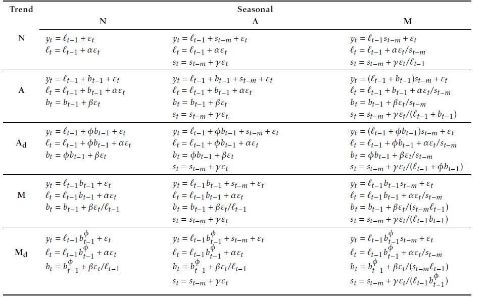
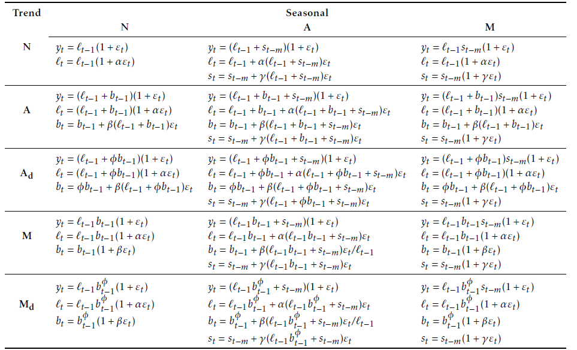
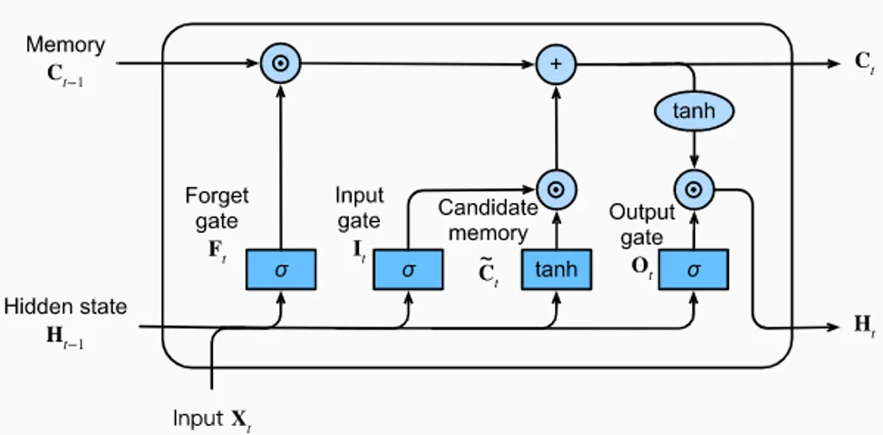

Methodology
Our team employed a comprehensive methodology utilizing both standard econometric models and machine learning type models to accurately nowcast the target variables. Specifically, we utilized a combination of three econometric models, including RegArima, Exponential Smoothing (ETS), and Dynamic Factor Models (DFM), as well as two machine learning models, XGBoost and Long Short-Term Memory (LSTM) models, to ensure robust and accurate forecasting. While we applied the same five model classes across all three challenges, including PPI, PVI, and Tourism, we tailored the specific datasets and parameters to each challenge to optimize model performance. This approach allowed us to leverage the strengths of both traditional econometric models and cutting-edge ML techniques to achieve the best possible forecasting results.
Regarima
Introduction
ARIMA modelling is a common type of time models used to capture internal information of a series, wether is is stationary or non stationary. ARIMA models offer some advantages in this exercise: they are relatively simple, easy to interpret, and therefore provide a useful benchmark for more complex models. As standard ARIMA models do not include external information, we use the extended version RegARIMA with external regressors (regression model with ARIMA errors, see Chatfield and Prothero (1973)):
\[ y_t = c + \sum_{i=1}^{p}\alpha_i x^i_{t}+u_t \] \[ \phi(L)(u_t) = \theta(L)(\varepsilon_t) \]
Additional regressors used in this project are of two types:
- Economic variables presented in the data section. REGARIMA models must keep parsimonious (contrary to other methods implemented in this project), so relevant variables are selected through standard selection procedures or a priori.
- Outlier variables such as level-shift or additive outilers to control for atypical observations.
Models are applied to the first differentiation of the variable of interest.
Automatic identification and nowcasting
We use the RJdemetra package (the TRAMO part) that provide an easy way to identify and estimate RegARIMA models with high flexibility on parameters.
- we allow for automatic detection of outliers on the estimation period in order to avoid large bias on coefficients. Without adding outliers, “covid” points, for instance, would totally distort coefficients. Outliers identified through this procedure could in addition be used in other methods
- computation time is fast (a few seconds for the whole set of countries)
- external regressors are selected independently, a priori or through standard variable selection procedure.
The final nowcast value is provided by the projection of the model at horizon 1, 2 or 3, depending on the challenge and the position in the month.
Seasonal adjustment for tourism
For tourism, the seasonal component is very strong and may not be the same as the explanatory variables. An X13 pre-treatment is applied to seasonnally adjust and correct for trading days the target variable (Number of nights spent at tourist accommodation establishments) and the potential explanatory variables. This treatment also provides a prediction for the seasonal coefficient of the nowcasted month.
Next, seasonally adjusted variables are put in the REGARIMA model. The final step involves nowcasting the “raw value” by dividing the SA forecast by the projected seasonal coefficient.
Dynamic Factor Models
Introduction
Dynamic Factor Models (DFM) are a powerful and versatile approach for nowcasting, which involves extracting latent factors from a large set of observed economic or financial indicators. These latent factors capture the underlying dynamics of the data and are used to generate forecasts or predictions in real-time.
DFM are based on the idea that a small number of unobservable factors drive the behavior of a large number of observed variables. These factors represent the common underlying movements in the data and can be interpreted as representing the state of the economy or the financial system at a given point in time. By estimating these latent factors from historical data, DFM allows us to capture the relevant information embedded in the observed indicators and use it to generate accurate nowcasts.
A standard dynamic factor model involves 2 main equations.
The factor equation (Equation 1): This equation represents the dynamics of the latent factors, which are unobservable variables that capture the common underlying movements in the observed data. The factor equation is usually specified as a dynamic system allowing the unobserved factors \(F_t\) to evolve according to a \(VAR(p)\) process, and can be written as: \[ F_t = \sum_{j=1}^pA_{j}F_{t-j} + \eta_t, \qquad \eta_t \sim N(0, \Sigma_{0}) \tag{1}\] where \(F_t\) represents the vector of latent factors at time \(t\), \(A_{j}\) is the (state-) transition matrix capturing the dynamics of the factors at lag \(j\), \(F_{t-1}\) is the vector of factors at time \(t-1\), and \(\Sigma_{0}\) is the (state-) covariance matrix.
The measurement equation (Equation 2): This equation links the latent factors to the observed variables. It specifies how the observed variables are generated from the latent factors and can be written as: \[ X_t = \Lambda F_{t} + \xi_t, \qquad \xi_t \sim N(0, R) \tag{2}\] where \(X_t\) represents the vector of observed variables at time \(t\), \(\Lambda\) is the factor loading matrix, linking the factors to the observed variables, \(\xi_t\) is the vector of measurement errors at time \(t\) and \(R\) is the (measurement-) covariance matrix.
| Matrices | Sizes | Descriptions |
|---|---|---|
| \(F_t\) | \(n \times 1\) | Vector of factors at time t \((f_{1t}, \ldots, f_{nt})'\) |
| \(A_j\) | \(r \times r\) | State transition matrix at lag \(j\) |
| \(\Sigma_0\) | \(r \times r\) | State covariance matrix |
| \(X_t\) | \(n \times 1\) | Vector of observed series at time t \((x_{1t}, \ldots, x_{nt})'\) |
| \(\Lambda\) | \(n \times r\) | Factor loading matrix |
| \(R\) | \(n \times n\) | Measurement covariance matrix |
| \(r\) | \(1 \times 1\) | Number of factors |
| \(p\) | \(1 \times 1\) | Number of lags |
Data used and estimation
For the estimation of our Dynamics Factor Models (DFM), we utilized three main sources of data to capture different aspects of the economic and financial activity. These data sources include Eurostat data for economic activity, financial data obtained using the Yahoo API for financial activity, and Google Trends data for capturing more recent evolutions1. By incorporating these three main sources of data, we aim to capture different aspects of the economic and financial activity, ranging from long-term trends to short-term fluctuations and recent evolutions. This multi-source data approach allows us to build a more comprehensive and robust DFM model, which can provide more accurate and timely nowcasting predictions for the variables of interest.
1 You can refer to the Data section for more extensive details on the data that has been used.
For the estimation of our various Dynamics Factor Models (DFM), we relied on the “dfms” package in R, a powerful and user-friendly tool for estimating DFMs from time series data. The “dfms” package provides convenient and efficient methods for DFM estimation, making it an invaluable resource for our nowcasting project. Its user-friendly interface and optimized algorithms make it easy to implement and customize DFM models, while its efficient computational capabilities enable us to handle large datasets with ease. It allows different type of estimations (see Doz, Giannone, and Reichlin (2011), Doz, Giannone, and Reichlin (2012) and Banbura and Modugno (2014)). We really want to thanks Sebastian Krantz, the creator of this package.
To ensure the robustness and accuracy of our DFM estimation, we took several steps beforehand the estimation pipeline of the “dfms” package. Since there are no trend or intercept terms in Equation 1 and Equation 2, we made \(X_t\) stationary by taking a first difference. Note that \(X_t\) is also standardized (scaled and centered) automatically by the “dfms” package.
We also pay attention to the availability of the data to ensure that each observed series have sufficient data for estimation. If any series have inadequate data, it is removed from the estimation process to prevent biased results. We also account for potential collinearities that could occur among several economic variables. Highly correlated series (\(\rho \geq 0.9999\)) are removed to mitigate multicollinearity issues and improve estimation accuracy.
To determine the optimal values for the number of lags and factors in our DFM models, we use the Bai and Ng (2002) criteria, which provides statistical guidelines for selecting these parameters. We set a maximum limit of 4 lags and 2 factors for computational efficiency reasons.
We initiate the estimation process from February 2005 for all challenges, and for the TOURISM challenge, we performed a seasonal adjustment on the target series prior to estimation in order to account for any seasonal patterns in the data.
Nowcasting
Once the DFM is estimated (\(A_j\), \(\Sigma_0\), \(\Lambda\), \(R\)), it can be used for nowcasting by forecasting the latent factors using the factor equation, and then generating nowcasts for the observed variables using the measurement equation. The predictions can be updated in real-time as new data becomes available, allowing for timely and accurate predictions of the variables of interest.
ETS
Exponential smoothing models (Hyndman et al. (2008)) are a class of models where forecasts are linear combinations of past values, with the weights decaying exponentially as the observations get older. Therefore, the more recent the observation is, the higher the associated weight is. Moreover, exponential smoothing models do not require any external data.
The exponential smoothing models used are a combination of three components:
An error: additive (\(A\)) or multiplicative (\(M\)).
A trend: additive (\(A\)), multiplicative (\(M\)), damped (\(A_d\) or \(M_d\)) or absent (\(N\)).
A seasonality: additive (\(A\)), multiplicative \(M\) or absent (\(N\)). The seasonal component is only used with tourism data.
See Figure 1 for the description of the model.


Source: Hyndman and Athanasopoulos (2018)
For each series, the model is selected minimising the Akaike’s Information Criterion (Akaike (1974)) and parameters are estimated maximising the likelihood.
XGBoost
Introduction
XGBoost is a powerful algorithm that has gained popularity in the field of machine learning due to its ability to handle complex interactions between variables and its flexibility in handling various types of data. In the context of Eurostat’s nowcasting competition, we utilized the XGBoost algorithm to predict the values of the Producer Price Index, the Producer Volume Index and the Number of nights spent at tourist accommodation establishments for most European countries. We will delve here into the technicalities of the XGBoost approach, and how we tailored it to our specific nowcasting problem.
XGBoost Algorithm
XGBoost (Chen and Guestrin (2016)) is a gradient boosting algorithm that is particularly well suited for regression and classification problems. It works by building a sequence of decision trees, each tree trying to correct the errors of the previous tree. During the training process, the algorithm iteratively adds decision trees to the model, where each new tree is fit on the residuals (i.e., the errors) of the previous trees. The final prediction is made by adding the output of all the trees.
To control for overfitting, XGBoost uses a combination of L1 and L2 regularization, also known as “lasso” and “ridge” regularization, respectively. These regularization methods add a penalty term to the loss function, which forces the algorithm to find simpler models. L1 regularization shrinks the less important features’ coefficients to zero, while L2 regularization encourages the coefficients to be small, but does not set them to zero. By using both methods, XGBoost is able to produce models that are both accurate and interpretable.
Another key feature of XGBoost is its ability to handle missing values. Rather than imputing missing values with a fixed value or mean, XGBoost assigns them a default direction in the split, allowing the algorithm to learn how to handle missing values during the training process.
Overall, the XGBoost algorithm has proven to be a powerful tool in the field of machine learning, and its ability to handle large datasets and complex interactions between variables make it well-suited for nowcasting problems like the Eurostat competition.
Transforming Time Series
To apply the XGBoost algorithm to our nowcasting problem, we first transformed the time series data into a larger dataset tailored for the algorithm. We gathered several sources of data, including financial series, macroeconomic series, and surveys, and created a dataset where each row corresponds to a value per country and per date with many explanatory variables. We added lagged versions of the target variable and some of the explanatory variables as additional features. By doing so, we captured the time series properties of the data and made it suitable for the XGBoost algorithm.
Grid Search for Hyperparameters
To obtain optimal results from the XGBoost algorithm, we used a grid search technique to find the best combination of hyperparameters for each model. We experimented with various values of hyperparameters, including learning rate, maximum depth, and subsample ratio, to determine which combination of parameters resulted in the best performance. The grid search enabled us to identify the best hyperparameters for the model, allowing us to obtain the most accurate predictions. We did not differentiate the hyperparameters for each country as it would have likely caused even more overfitting.
Training XGBoost for Nowcasting
To predict our 3 indicators for each country, we trained an XGBoost model for each country independently. We randomly split the data into training and testing sets and trained the model on the training set using the optimal hyperparameters obtained from the grid search. We evaluated the model’s performance on the testing set using various metrics such as mean squared error and mean absolute error.
LSTM
Introduction
Long Short Term Memory (LTSM) networks (Hochreiter and Schmidhuber (1997)) are a particularly interesting kind of recurrent Neural Network (NN) when it comes to time series forecasting. It allows for learning long-term dependencies in the data without losing performances in grasping short term relations. They overcome the main flaw addressed to recurrent NN models which is the unboundedness of the lookback time window that implies limitations in long-term dependencies. LSTM enable to cope with this problem thanks to the incorporation of a cell space that stores long term information that is updated at each step. This update implies incorporating but more importantly getting rid of some information which regulates for the long term dependence. This is done using a particular structure using repeated modules, each of which is composed of four layers that convey information in a particular way (see@fig-StructureLSTM).

LTSM model
During the training process, the LSTM model is fed a sequence of inputs, with each input representing a timestep in the time series. The model then generates a corresponding output for each timestep, which is compared to the actual value to compute a loss function. The weights of the model are updated through backpropagation, where the gradient of the loss function is propagated backwards through the network.
One of the challenges of using LSTMs for time series forecasting is selecting an appropriate window size, or the number of previous timesteps that the model should consider when making each prediction. A larger window size can capture longer-term trends in the data, but may also introduce more noise and complicate the training process. A smaller window size, on the other hand, may be more sensitive to short-term fluctuations in the data, but may not capture longer-term trends as effectively.
In the context of the Eurostat competition, the LSTM approach was used to predict the value of several economic indicators, including the Producer prices in industry, the Producer volume in industry and the Number of nights spent at tourist accommodation establishments. The time series data for each country was transformed into a format that was suitable for LSTM training, with each row representing a single timestep in the time series and the columns representing the various input features.
Data and estimation
We gathered indicators of the macroeconomic environment from different sources. These data include hard : macro variables, financial indicators, economic surveys, prices and soft indicators. The data is transformed into a large dataset, we included macroeconomic series and their lags. The series are all scaled. The LSTM model is trained independently for each country, with a grid search used to find the optimal hyperparameters for each model. Overall, the LSTM approach proved to be a powerful tool for time series forecasting, and its ability to capture long-term dependencies in the data made it particularly well-suited for the nowcasting problem at hand.
Similarities and differences to State-of-the-Art techniques
A few specificities of our work:
A significant portion of our database comprises classic macroeconomic indicators, including prices, surveys, and Brent. All of them are open source.
For low-dimensional methods, we ensure minimal control over the consistency of selected variables or signs of estimated coefficients.
We have compared different methods and included traditional methods in our analysis, but our research also incorporates methods that rely on recent developments.
We exclusively use open data sources, avoiding non-free data aggregators, which ensures high reproducibility. However, data retrieval can be more expensive, and some non-free data cannot be utilized.
We made a conscious effort to identify new data sources or indicators. We also incorporate soft data such as Google Trends in our analysis.
The methods we use combine data with diverse frequencies, up to weekly indicators (created from daily data), allowing us to improve the precision of our predictions up until the last day of each month.